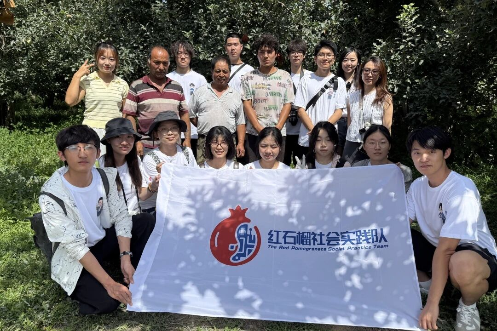
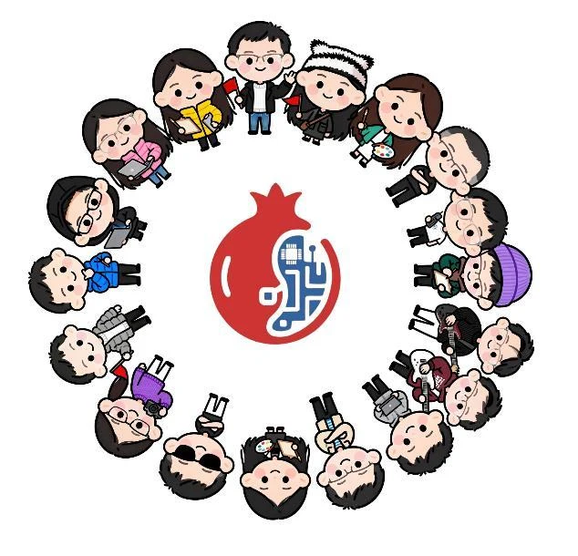

实践队简介

我们从哪里来
2023 年，北航软件学院分团委牵头成立“红石榴”工作室。实践队由软件学院团委与工作室共同组建，得到学校党委统战部的指导与支持。队徽把一颗石榴的红色外廓与蓝色电路、芯片画在一起，也道出了大家相聚的缘由：用所学的技术，记录新疆各族群众共同建设家园的故事。
一次采访之后
2026 年寒假，来自 8 个学院的 19 名队员分工访谈、整理史料、制作互动作品。到了暑假，13 个学院的 26 名本硕博同学走进南疆。田野调查组带回果农访谈和现场影像，研发与创作组把素材做成苹果品牌动画；宣讲团则在和田县稻香书院，面对面讲起队伍在新疆的见闻。
沿时间轴读两季实践记录 →资料来源 寒假成果大报告第 5–9、53 页；暑期成果大报告第 8–10、38 页；暑期汇报第 5、18 页。
发展历程
2023 年 · 工作室成立
北航软件学院分团委牵头成立“红石榴”工作室。工作室孵化宣讲作品，实践队走进边疆采集故事，宣讲团再把一线见闻带回校园。
2026 年寒假 · 从社区收集口述史
队员走进石河子老旧社区，记录军垦战士的创业记忆，在吐鲁番、伊犁走访村落和水利遗址。
2026 年春夏 · 从讲台回到田野
5 月，红石榴宣讲团参加北京高校主题宣讲展示。8 月，实践队赴南疆开展产业与生态调研，在阿克苏参与党建工作站揭牌，在和田稻香村开展实践基地共建。
看本季回顾 · 暑期总结视频 →资料来源 暑期成果大报告第 8–9、40–42 页；寒假总结报告第 1–2 页。
团队成员
寒假队伍
来自 8 个学院的 19 名同学分为调研、技术、宣传三个组。调研组整理访谈，技术组把田野故事转成互动作品，宣传组用影像和图文记录行程。
暑期队伍
软件、新媒体艺术与设计、人文社科、交通等学科的队员共同参与。田野调查组走访企业与社区，技术研发组开发数字作品，内容创作组负责影像与推送，组织统筹组对接行程与校地合作。
资料来源 寒假成果大报告第 5–6 页；暑期成果大报告第 9–10 页、暑期汇报第 5 页。
指导教师
寒假 · 学术指导与带队
高宁、盛律分别从思想政治教育和软件工程两个方向提供指导。李慧、刘泽京全程带队。
暑期 · 学术指导与带队
据暑期成果报告，邓攀、盛律指导数字技术与软件工程相关研究，李慧、谢文婧共同带队，负责行程统筹、校地对接与成果把关。
资料来源 寒假成果大报告第 5 页；暑期成果大报告第 9 页。